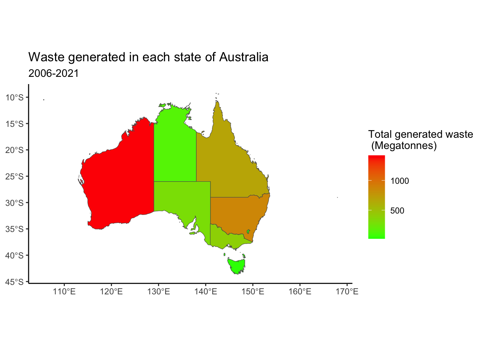
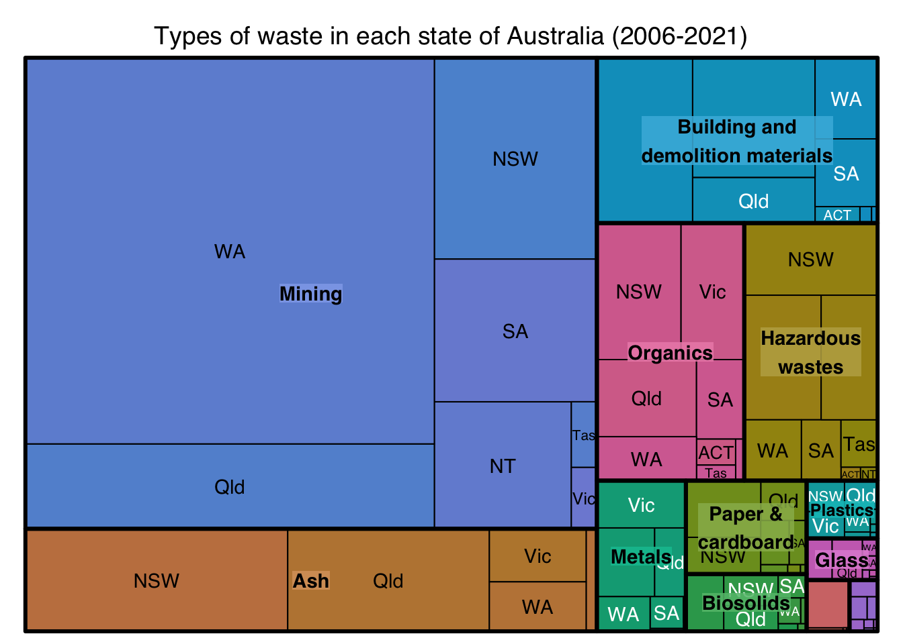
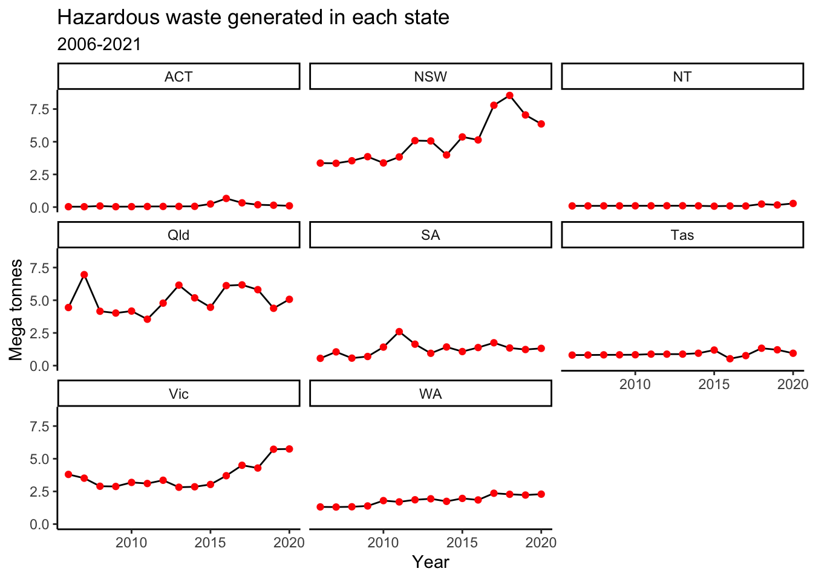
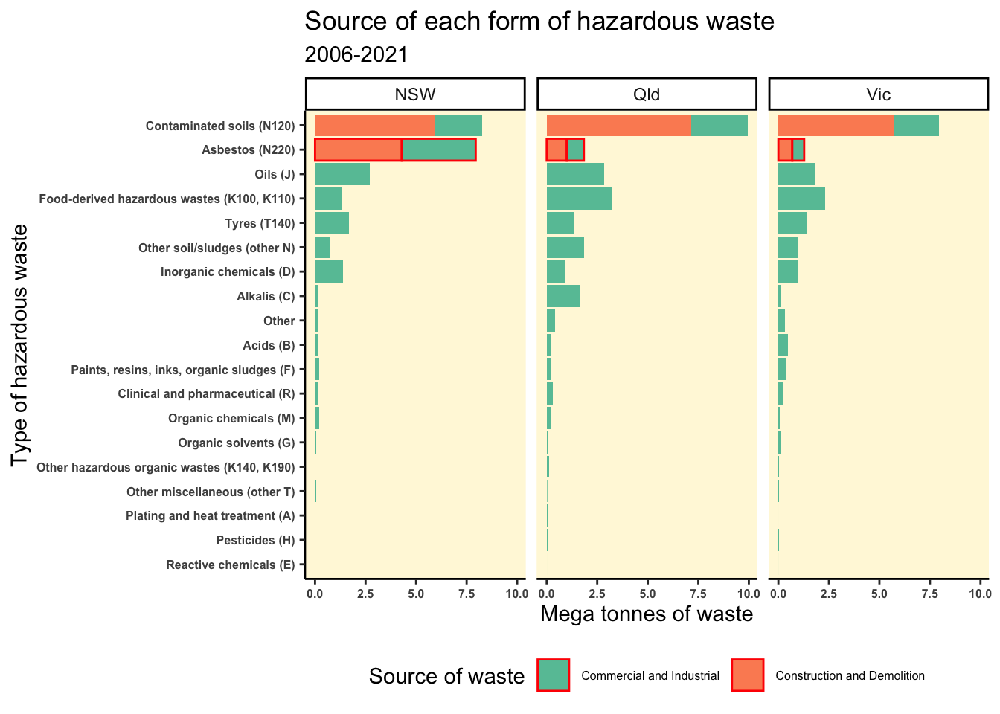

library(tidyverse)
library(ggplot2)
library(visdat)
library(janitor)
library(plotly)
library(ggthemes)
library(scales)
library(RColorBrewer)
library(treemap)
library(ozmaps)
library(sf)MDSS Datathon
Key questions
- Which states are the leading waste generators in Australia ?
df <- read_csv("data-raw/data_waste.csv")
head(df)# A tibble: 6 × 17
Year Jurisdiction Category Type Classification `Total type` Stream
<chr> <chr> <chr> <chr> <chr> <chr> <chr>
1 2020-2021 ACT Biosolids Biosolids Type <NA> C&I
2 2020-2021 ACT Biosolids Biosolids Type <NA> C&I
3 2020-2021 ACT Biosolids Biosolids Type <NA> Total
4 2020-2021 ACT Biosolids Biosolids Type <NA> Total
5 2020-2021 ACT Biosolids <NA> Category <NA> C&I
6 2020-2021 ACT Biosolids <NA> Category <NA> C&I
# ℹ 10 more variables: Management <chr>, Fate <chr>, Tonnes <dbl>,
# `Core or non-core` <chr>, `Sub-stream` <chr>, `Cat. order` <chr>,
# `Cat. no.` <chr>, `Type order` <chr>, `Type no.` <chr>, ...17 <lgl>Let us clean the names of the variables
df_waste <- clean_names(df)
df_waste[c("start_year","end_year")] <- (str_split_fixed(df_waste$year,"-",2))
df_waste$start_year <- as.numeric(df_waste$start_year)
df_waste$end_year <- as.numeric(df_waste$end_year)
df_waste<- df_waste%>% select(-year)
head(df_waste)# A tibble: 6 × 18
jurisdiction category type classification total_type stream management fate
<chr> <chr> <chr> <chr> <chr> <chr> <chr> <chr>
1 ACT Biosolids Bios… Type <NA> C&I Other dis… Disp…
2 ACT Biosolids Bios… Type <NA> C&I Recycling Recy…
3 ACT Biosolids Bios… Type <NA> Total Other dis… Disp…
4 ACT Biosolids Bios… Type <NA> Total Recycling Recy…
5 ACT Biosolids <NA> Category <NA> C&I Other dis… Disp…
6 ACT Biosolids <NA> Category <NA> C&I Recycling Recy…
# ℹ 10 more variables: tonnes <dbl>, core_or_non_core <chr>, sub_stream <chr>,
# cat_order <chr>, cat_no <chr>, type_order <chr>, type_no <chr>, x17 <lgl>,
# start_year <dbl>, end_year <dbl>Waste per state
df_waste_state <- df_waste %>% filter(stream == "Total") %>% group_by(jurisdiction,category) %>%
summarise(Total_tonnes = sum(tonnes)) %>% filter(jurisdiction !="Australia" & category != "Total")
df_waste_grouped <- df_waste_state %>% group_by(jurisdiction) %>%
summarise(Total_tonnes = sum(Total_tonnes))
df_waste_grouped <- df_waste_grouped %>%
mutate(jurisdiction = case_match(jurisdiction, "ACT"~"Australian Capital Territory",
"NSW"~"New South Wales",
"Vic" ~ "Victoria",
"Qld" ~ "Queensland",
"SA" ~ "South Australia",
"WA" ~ "Western Australia",
"NT" ~ "Northern Territory",
"Tas" ~ "Tasmania"))
sf_oz <- ozmap("states")sf_oz <- left_join(sf_oz,df_waste_grouped,by=c("NAME"="jurisdiction"))
label_data <- data.frame(
state = c("NSW", "VIC", "QLD", "SA", "WA", "TAS"),
lon = c(146, 144, 146, 135, 122, 147),
lat = c(-33.85, -37.8, -19.25, -30.0, -25.0, -42.0)
)
pl <- ggplot(data = sf_oz, aes(fill = Total_tonnes/10^6)) + geom_sf() + scale_fill_gradient(low ="green", high = "red")+
theme_classic() + labs(fill = "Total generated waste \n (Megatonnes)",title = "Waste generated in each state of Australia",
subtitle = "2006-2021")
pl
df_waste_grouped <- df_waste_grouped %>% mutate(Proportion = 100* Total_tonnes/sum(Total_tonnes))We can observe that:
- WA leads the way in waste generation followed by NSW and QLD.
- While this maybe counter intuitive as WA has a considerably smaller population (2.67 million) when compared to NSW (8.16 million) and QLD (5.185 million), however, due to the presence of heavy industries such as mining, petroleum and chemicals, a significant amount of waste is generated in WA.
- The most common form of waste generated from each state are observed to be ash and rubble.
pl1 <- treemap(df_waste_state,
index=c("category","jurisdiction"),
vSize="Total_tonnes",
type = "index",title = "Types of waste in each state of Australia (2006-2021)") 
Hazardous waste
df_haz <- df_waste %>% filter(category == "Hazardous wastes")
df_haz_tot <- df_haz %>% filter(stream == "Total")
df_haz_total <- df_haz_tot %>% group_by(start_year,jurisdiction,category) %>%
summarise(Tonnes = sum(tonnes)) %>%
ungroup() pl1 <- ggplot(data = df_haz_total,aes(x = start_year,y = Tonnes/10^6)) +
geom_line() + geom_point(color='red') + theme(axis.text.x = element_text(angle = 45,size=5)) + facet_wrap(~jurisdiction) + labs(x = "Year",y = "Mega tonnes",title = "Hazardous waste generated in each state",subtitle = "2006-2021") + theme_classic()
pl1
- NSW accounts for the highest hazardous waste in the whole of Australia with close to 8.5 MT. The hazardous wastes are on a rising trend.
- QLD is observed to record constant generation of hazardous waste each year with approximate 6 MT.
- VIC is observed to record a rising trend of hazardous waste in recent years with close to 5.75 MT in 2021.
How is the Hazardous waste dealt with in each state ?
haz_jurisdictions <- c("NSW","Vic","Qld")
df_haz_subset <- df_haz_tot %>% filter(jurisdiction %in% haz_jurisdictions)
df_haz_man <- df_haz_subset %>% group_by(jurisdiction,management) %>%
summarise(Tonnes = sum(tonnes)) %>% ungroup()
pl2 <- ggplot(data = df_haz_man,aes(x = reorder(management,Tonnes),y = Tonnes/10^6)) + geom_col(fill = "lightgray",color = "black") +
facet_wrap(~jurisdiction) + coord_flip() + geom_col(data = ~filter(.x, management == "Landfill"),fill = "darkred") + geom_label(data = ~filter(.x, management == "Landfill"),aes(label = round(Tonnes/10^6,1),hjust=1)) + geom_col(data = ~filter(.x, management == "Energy from waste facility"),fill = "green") + geom_label(data = ~filter(.x, management == "Landfill"),aes(label = round(Tonnes/10^6,1),hjust=1)) + geom_label(data = ~filter(.x, management == "Energy from waste facility"),aes(label = round(Tonnes/10^6,1),hjust=-0.5)) +
labs(x = "Waste management technique",y = "Mega tonnes of waste",title ="Hazardous waste management in the top 3 \n waste producing states",subtitle = "2006-2021") + theme_economist()
pl2
We observe that the:
In all the three states (NSW,Qld,Vic), majority of the hazardous waste are managed through disposing in landfills. While this may be a temporary solution, the implications can be quite devastating as such waste normally take years to decompose and start polluting the water ways as well as pottable water resources.
While there have been efforts to utilise hazardous waste to produce energy, it is still a long way behind, with more concerted efforts required by each state to curb disposal of hazardous waste into landfills and obtain clean energy.
While VIC is observed to generate lesser hazardous waste than NSW and QLD, they’re also leading with the highest energy production from waste facilities with approximately 1.6 Mega tonnes of waste utilised.
What is the constitution of these Hazardous wastes ?
hazardous_waste_summary <- df_haz %>%
group_by(type) %>%
filter(jurisdiction %in% haz_jurisdictions) %>%
summarise(Total_Tonnage = sum(tonnes))
hazardous_waste_summary <- hazardous_waste_summary %>%
filter(!is.na(type) & !is.na(Total_Tonnage))
ggplot(hazardous_waste_summary, aes(x = reorder(type, Total_Tonnage/10^6), y = Total_Tonnage/10^6)) +
# Lollipop stems
geom_segment(aes(y = 0,
yend = Total_Tonnage/10^6,
x = reorder(type, Total_Tonnage/10^6),
xend = reorder(type, Total_Tonnage/10^6)),
color = "black", size = 1) +
# Lollipop heads
geom_point(aes(fill = type), size = 6, shape = 21, color = "white") +
# Y-axis scale formatting
scale_y_continuous(labels = scales::label_comma()) +
# Chart title and axes labels
labs(title = "Composition of Hazardous Wastes",
x = "Type of Waste",
y = "Mega tonnes of waste") +
# Classic theme and customization
theme_classic() +
coord_flip() +
theme(legend.position = "none",
axis.text.y = element_text(size = 8, color = "black"),
axis.title = element_text(face = "bold", size = 10),
plot.title = element_text(hjust = 0.5, face = "bold", size = 14),
panel.background = element_rect(fill = "cornsilk"),
panel.grid.minor.y = element_blank(),
panel.grid.major.y = element_blank(),
panel.grid.major.x = element_line(linewidth = 0.1, color = "black"))haz_jurisdictions <- c("NSW","Vic","Qld")
df_haz_subset <- df_haz_tot %>% filter(jurisdiction %in% haz_jurisdictions)
df_state_total <- df_haz_tot %>% filter(jurisdiction %in% haz_jurisdictions) %>%
group_by(jurisdiction) %>%
mutate(total_waste_per_state = sum(tonnes)) %>%
select(jurisdiction, tonnes, management, total_waste_per_state) %>%
ungroup()
df_haz_man <- df_state_total %>%
filter(jurisdiction %in% haz_jurisdictions) %>%
group_by(jurisdiction, management) %>%
summarise(Tonnes = sum(tonnes)) %>%
left_join(df_state_total %>%
group_by(jurisdiction) %>%
summarise(total_waste_per_state = sum(tonnes)), by = "jurisdiction") %>%
mutate(percent_by_management = round(Tonnes / total_waste_per_state * 100, 2)) %>%
select(jurisdiction, management, total_waste_per_state, Tonnes, percent_by_management)
upper_limit <- ceiling(max(df_haz_man$percent_by_management, na.rm = TRUE) / 10) * 10
pl2 <- ggplot(data = df_haz_man, aes(x = reorder(management, percent_by_management), y = percent_by_management)) +
geom_col(fill = "lightgray", color = "black") +
facet_wrap(~jurisdiction) +
coord_flip() +
geom_col(data = ~filter(.x, management == "Landfill"), fill = "darkred") +
geom_label(data = ~filter(.x, management == "Landfill"), aes(label = round(percent_by_management, 1), hjust=1)) +
geom_col(data = ~filter(.x, management == "Energy from waste facility"), fill = "green") +
geom_label(data = ~filter(.x, management == "Energy from waste facility"), aes(label = round(percent_by_management, 1), hjust=-0.5)) +
labs(x = "Waste management technique", y = "Total percentage of waste", title ="Hazardous waste management in the top 3 \n waste producing states", subtitle = "2006-2021") +
theme_economist() +
scale_y_continuous(breaks=seq(0, upper_limit, 10), labels = scales::label_number(scale = 1)) + theme(axis.text.x = element_text(size =6))
pl2df_haz_source <-df_haz %>% filter(jurisdiction %in% haz_jurisdictions,stream != "Total")
df_haz_source_grouped <- df_haz_source %>% group_by(jurisdiction,type,stream) %>% summarise(Total_tonnes = sum(tonnes))
df_haz_source_grouped <- df_haz_source_grouped %>% mutate(stream = case_match(stream,
"C&D"~"Construction and Demolition",
"C&I" ~ "Commercial and Industrial"))
pl3 <- ggplot(data = df_haz_source_grouped %>% drop_na(),
aes(
x = reorder(type, Total_tonnes),
y = Total_tonnes / 10 ^ 6,
fill = stream
)) + geom_col() + coord_flip() + labs(x = "Type of hazardous waste", y = "Mega tonnes of waste", fill = "Source of waste") + theme_classic() + theme(
panel.background = element_rect(fill = "cornsilk"),
axis.text.x = element_text(size = 6, face = "bold"),
axis.text.y = element_text(size = 6 , face = 'bold'),
legend.text = element_text(size = 6),
legend.position = "bottom"
) + facet_wrap( ~jurisdiction) + ggtitle("Source of each form of hazardous waste", subtitle = "2006-2021") + scale_fill_brewer(palette = "Set2") + geom_col(data = ~filter(.x, type == "Asbestos (N220)"),color = "red")
pl3
Asbestos has been observed to be clearly the differentiating factor for NSW hazardous waste generation when compared to QLD and VIC with close to equal contribution from the commercial & industrial and construction & demolition.
How is Asbestos handled ?
df_haz_source_fate <- df_haz_source %>% filter(type == "Asbestos (N220)") %>%
group_by(jurisdiction,stream,fate) %>%
summarise(Total_tonnes = sum(tonnes))
df_haz_source_fate <- df_haz_source_fate %>% mutate(stream = case_match(stream,
"C&D"~"Construction and Demolition",
"C&I" ~ "Commercial and Industrial"))
pl4 <- ggplot(data = df_haz_source_fate,aes(x = fate,y = Total_tonnes/10^6,fill = stream)) +
geom_col(color = "black") +
facet_wrap(~jurisdiction) + theme_minimal() + theme(panel.background = element_rect(fill = "cornsilk"),axis.text.x = element_text(angle =40,vjust = 0.8,size=6.5,face = "bold")) + labs(x ="Type of waste management",y = "Mega tonnes of waste",fill = "Source of waste") + ggtitle("Waste management of Asbestos in \n top Hazardous waste producing states",subtitle = "2006-2021") + scale_fill_brewer(palette = "Reds")
pl4We can observe that Asbestos does indeed pose a significant threat to the environment with no known techniques to either recycle or generate energy out of it. As a result, nearly all the generated waste out of Asbestos needs to be disposed in various landfills, consequently posing a serious threat to the environment.